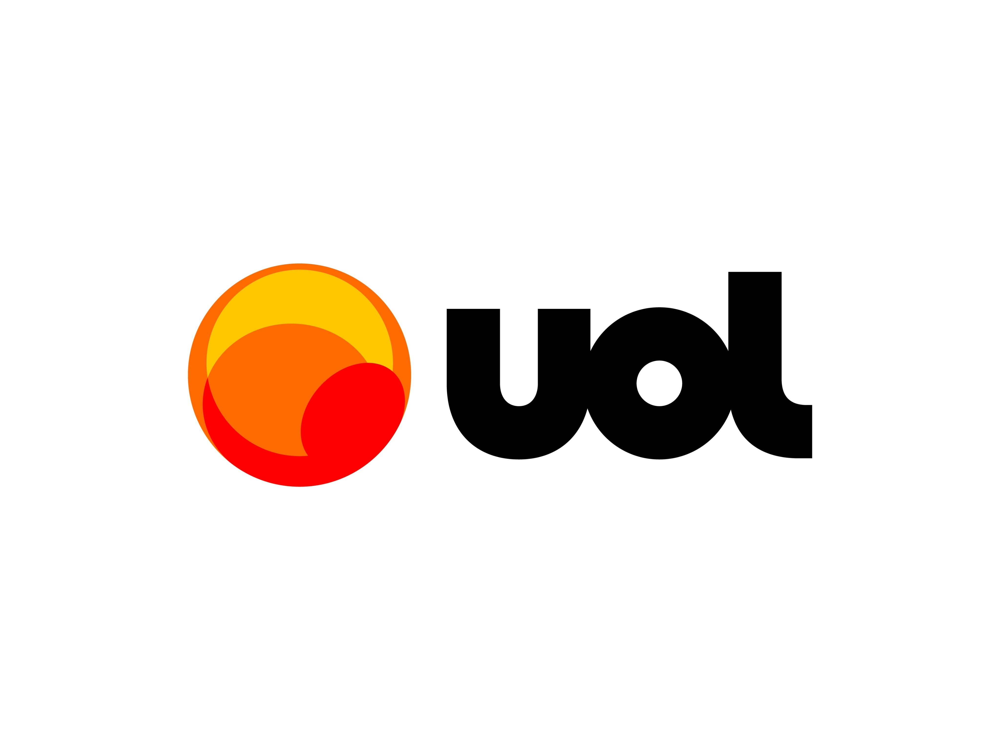
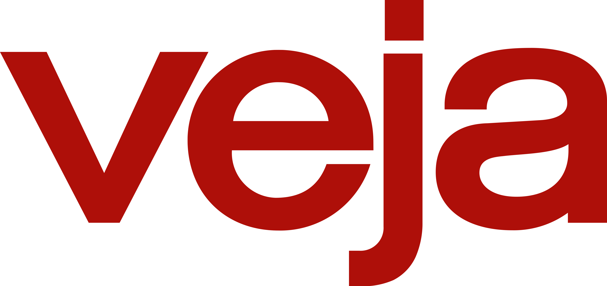
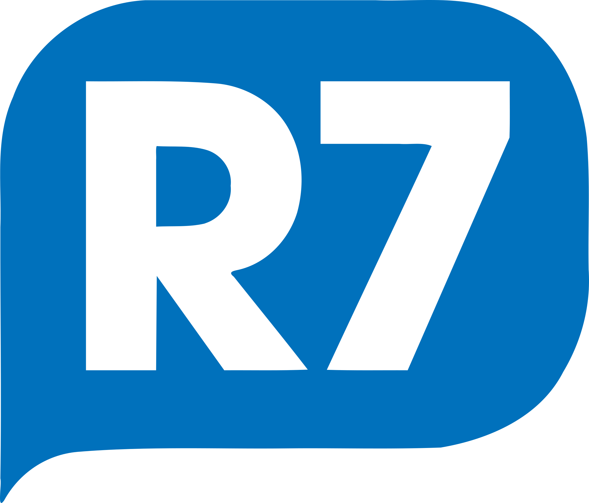
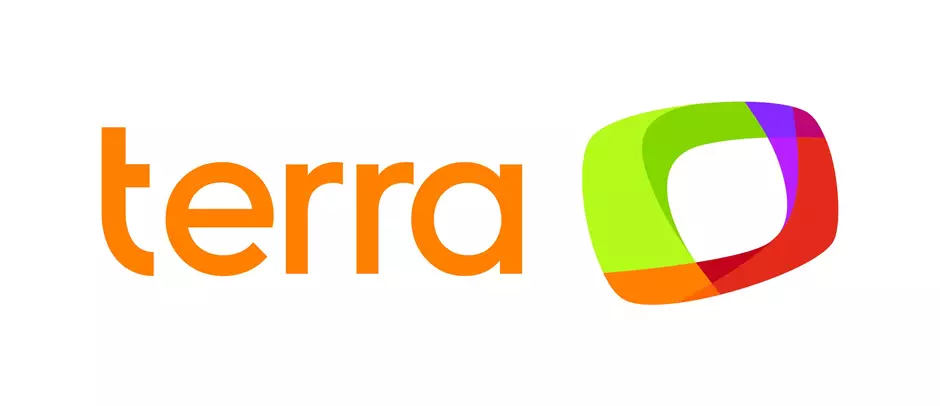
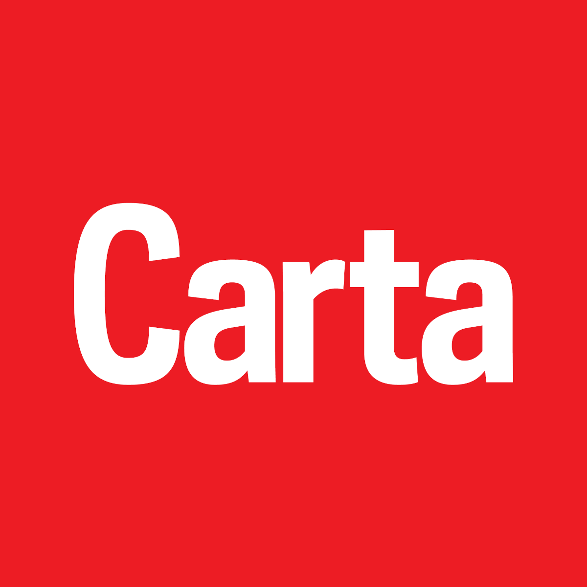

Bem vindo(a) a página de teste
O propósito desta página é direcionar os usuários para os principais sites de notícias.

O G1 é uma das maiores referências em notícias no Brasil, fazendo parte do Grupo Globo.
Com uma ampla gama de categorias, o site oferece cobertura abrangente de notícias nacionais
e internacionais, incluindo política, economia, cultura, esportes e entretenimento.
É conhecido por atualizações em tempo real e recursos multimídia, como vídeos e fotos.
1- G1(Grupo Globo)

O UOL Notícias é um portal de notícias completo que oferece notícias, análises, colunas e
opiniões sobre uma variedade de tópicos, desde política e economia até entretenimento e esportes.
Além das notícias, o site também abriga blogs e vídeos, tornando-o uma fonte versátil de informação.
2- UOL Notícias
A Folha de S.Paulo é um dos jornais mais respeitados do Brasil. Ele se destaca por sua cobertura
jornalística aprofundada e análises detalhadas de eventos nacionais e internacionais.
O jornal oferece notícias políticas, econômicas, culturais e sociais, bem como editoriais e colunas de opinião.
3- Folha de S.Paulo
Outro jornal de prestígio no Brasil, O Estado de S.Paulo, oferece notícias e análises em várias áreas,
desde política e economia até cultura e tecnologia. É reconhecido por sua
tradição jornalística e compromisso com a precisão.
4- O Estado de S.Paulo
A versão em português da BBC fornece notícias nacionais e internacionais com um foco em análises aprofundadas
e reportagens de qualidade. É uma fonte confiável para entender eventos globais e nacionais.
5- BBC News Brasil

A revista VEJA é uma publicação semanal que cobre uma ampla gama de tópicos, incluindo política, economia,
cultura e estilo de vida. Além das notícias, a revista também apresenta ensaios,
reportagens especiais e entrevistas.
6- VEJA
O iG é um site de notícias que abrange uma variedade de tópicos, desde notícias de entretenimento e celebridades
até notícias nacionais e internacionais. Ele fornece informações em formatos variados,
incluindo artigos, vídeos e galerias de fotos.
7- IG(iG)

O R7 é o portal de notícias da Rede Record e oferece cobertura abrangente de eventos e notícias nacionais e internacionais.
O site inclui seções dedicadas a esportes, entretenimento e saúde, além de notícias
em tempo real.
8- R7(Rede Record)

O Terra é um portal de notícias que oferece uma variedade de tópicos, incluindo notícias, esportes e entretenimento.
Ele também transmite eventos ao vivo e fornece análises aprofundadas sobre temas atuais.
9- Terra

CartaCapital é uma revista de notícias e análises com uma perspectiva progressista. Ela cobre temas como política,
economia e cultura com uma abordagem crítica e oferece artigos de opinião e reportagens investigativas.
10- CartaCapital
A primeira página de Luiz Vieira